I
Inspection under light
We check every panel under 5,000 K light and measure paint thickness. You get photos of what we see before we touch anything.
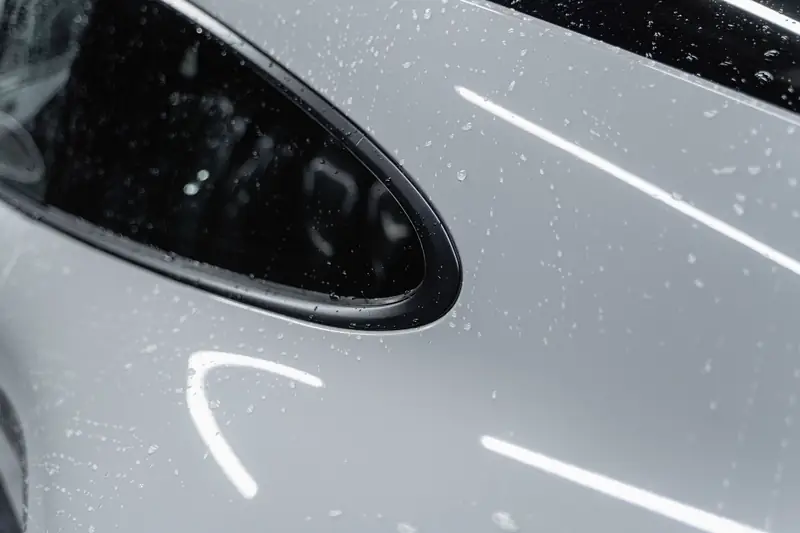
Paint correction · Ceramic coating · PPF · Tampa
We take out the swirls the car wash left behind and seal the paint in ceramic, one car at a time, under studio light.
Move across the paint to polish it
Under the right light, every paint job tells its history: the roller wash, the dry towel, the bird on I-275. We read it panel by panel and leave it like a mirror.
Services and starting prices
The process
We check every panel under 5,000 K light and measure paint thickness. You get photos of what we see before we touch anything.

Foam, a two-bucket wash, iron remover and clay. The paint is glass-smooth to the touch before any polishing.
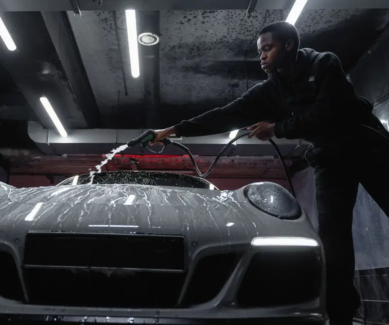
Dual-action polisher, panel by panel, with the light right on it. We stop when the reflection is clean, not when the clock says so.
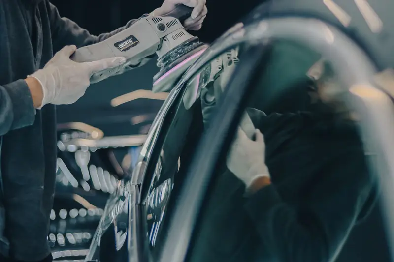
Ceramic goes on section by section and cures under infrared lamps in a climate-controlled bay. Tampa humidity stays outside.
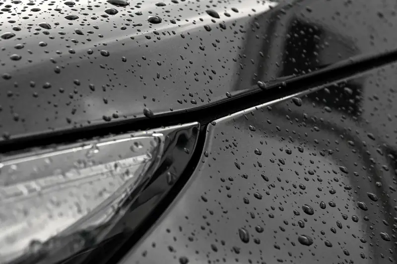
Recent work
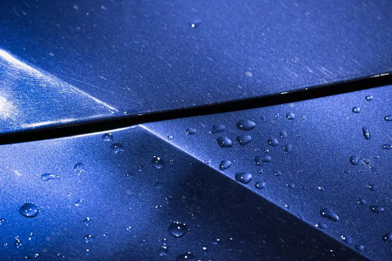
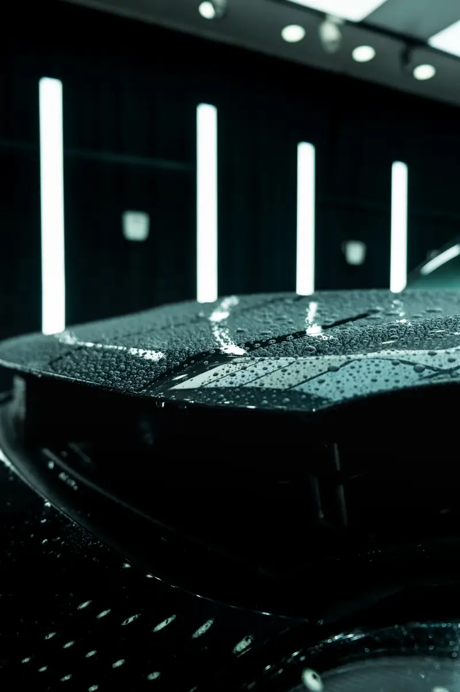
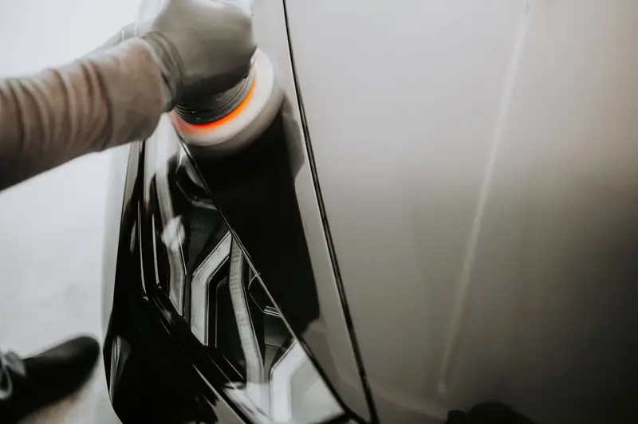
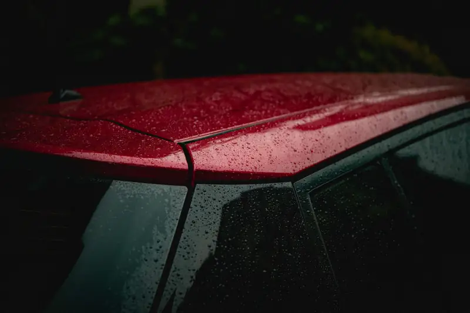
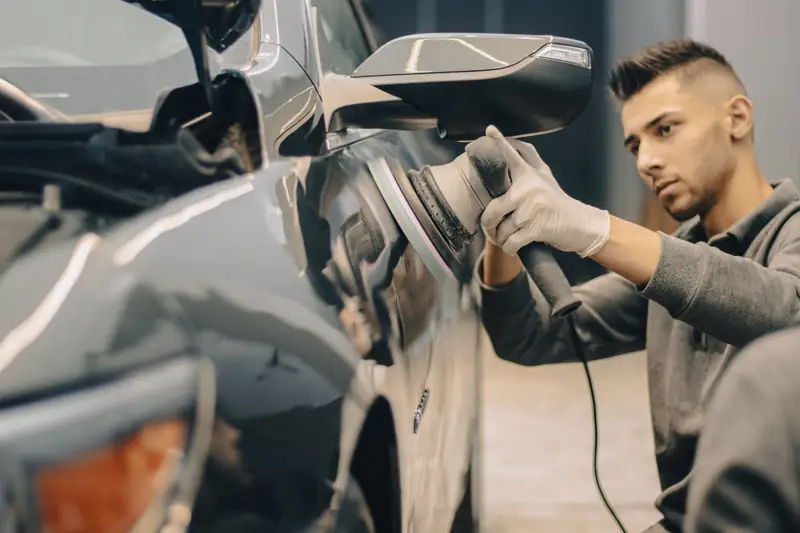
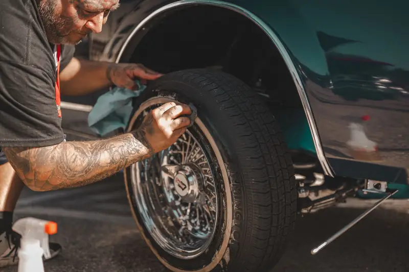
Clients
“I brought in a nine-year-old black sedan covered in swirls. It came back with a reflection you could read my shirt tag in.”
“They showed me the thickness readings and told me which panel wasn’t worth polishing. That honesty is worth more than the shine.”
“A year later and water still beads straight off. I rinse it with a hose and it looks like the day I picked it up.”
Request a quote
We reply the same day with a price range and the next open date in the studio.
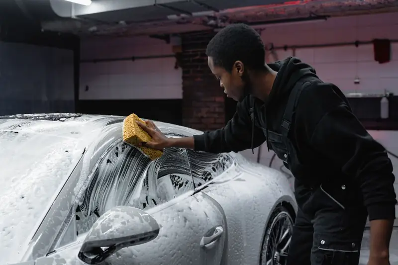
(813) 555-0119studio@nacardetail.com
Open today
| Mon – Fri | 8:00 – 6:00 |
|---|---|
| Saturday | 9:00 – 3:00 |
| Sunday | Closed |
By appointment only. After-hours key drop and pickup on request.
Get directions